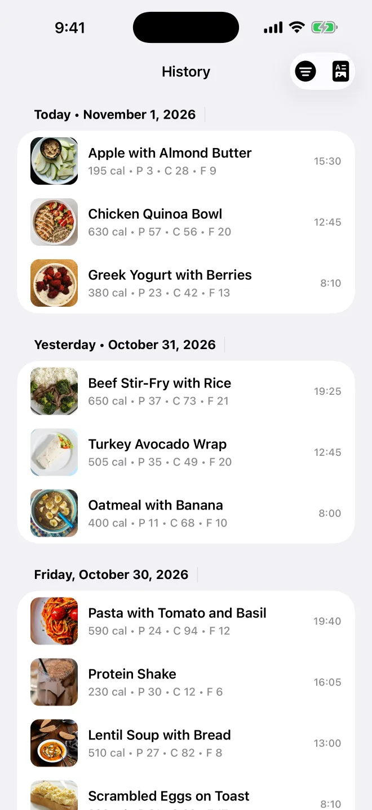

Everything You Log, In One Place
Snap a meal, check your day, look back on every meal and follow a plan built around you.
Your Camera Counts Calories
Snap a meal and AI breaks it into calories and macros. Packaged food? Scan the barcode or the label.

Your Whole Day at a Glance
See calories left and macros eaten, plus every meal you logged today.

Look Back on Every Meal
A day-by-day food diary with calories and macros for every meal. Save a meal and add it again in a tap.

A Plan Built Around You
A daily calorie and macro target from your details. Adjust it anytime.